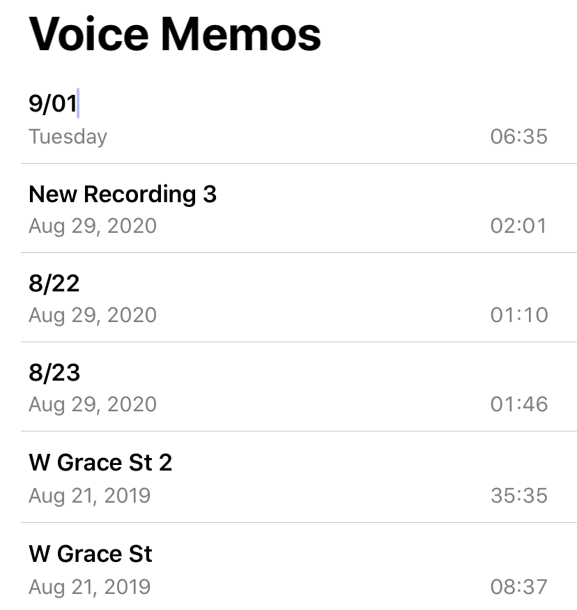
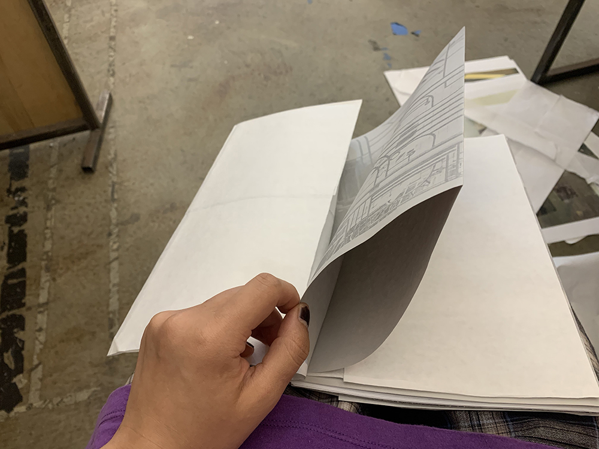
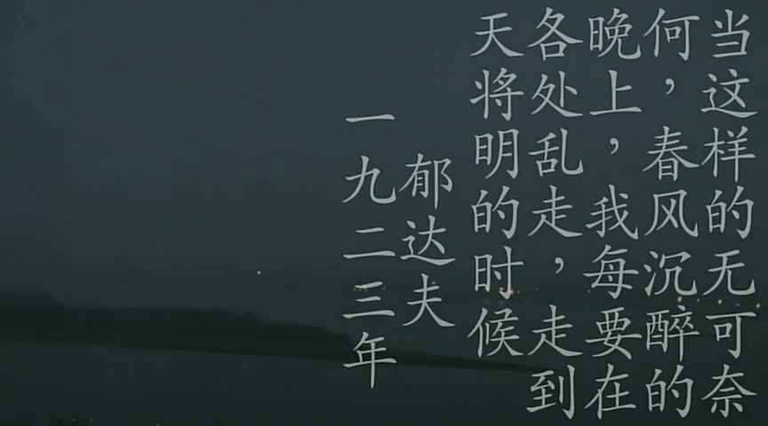
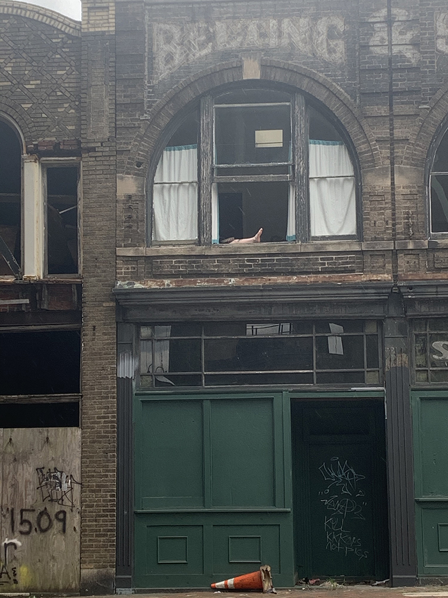
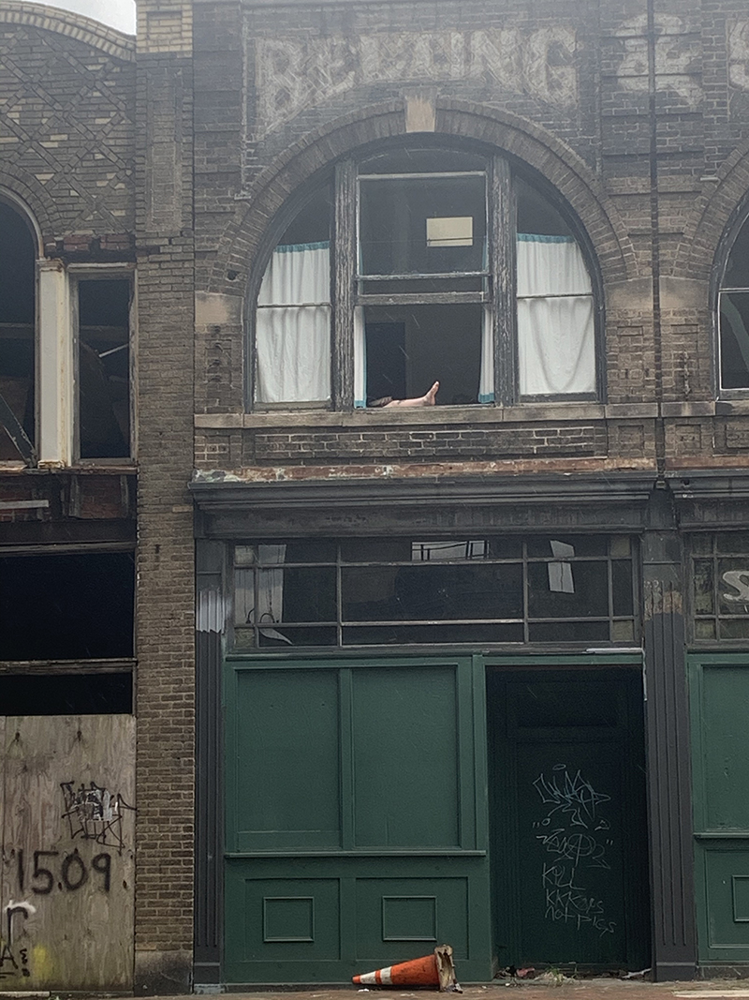
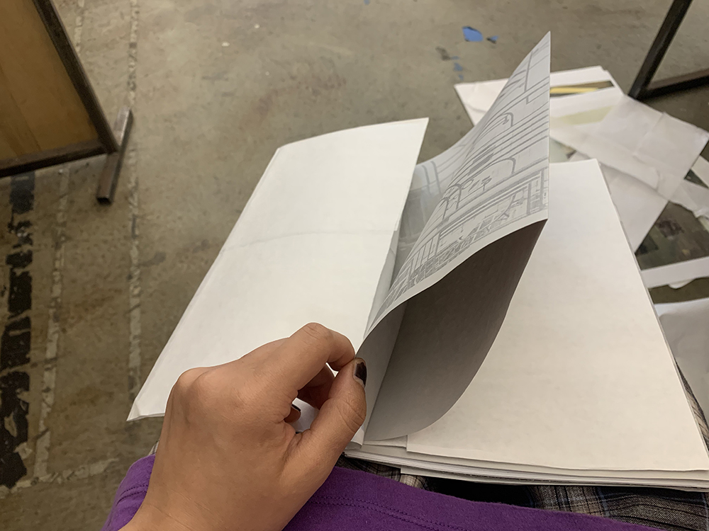
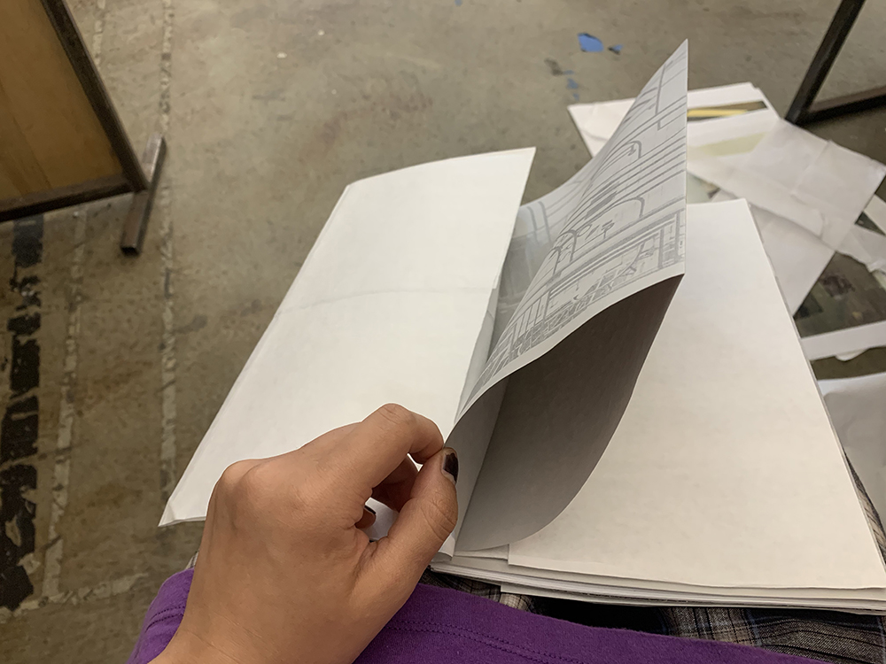

Even though the city landscape were really "normal" for me, I still wanted to capture the glimmering of it (from my perspective).
Also i recorded my flowing thoughts by phone.

~~~~~~~~~~~~~~~~~~~~~~~
After some orgnizing, I was thinking what intervention I can do with those pictures. think about some photograph works and photo books I like...from 26 gas station(1963)↓ / every building on the sunset strip(1966)↓..whiskey A-Go-Go (sunset strip portfolio) 1976, printed 1995 ↓
Then I tried many ways...different sizes/papers, and thought the binding/layout..
Finally decided the size is 18cm×28.5cm, I will use different papers in the book, grey paper for the B&W photos and light smooth paper for color photo, at the end will use kind of news print rough paper for text...different papers mimic various materials in the city. Last picture is the folding of the paper inside ↓, i was thinking of putting voice memo here.

Next step...still thinking about the elements i can apply to build connections between pictures/text/vocie recording(in the book), making typeface(**the relationship of img and words, the narrative/memories)...online space for voice memo(?not sure), and online presentation for critique...
~~~~~~~~~~refrence~~~~~~~~~~
1~ 転々/tenten (2007)
-Your dad have another name for “walk”?
What? Walks are walks.
-That’s not fun.
He’s not my real dad.
-I know, but some dads are interesting.
That’s true, but…
-In my house, “Walks are called ‘strait’.”
“Strait”?
-My old man loved walks. In my composition, I wrote that taking walks was his strait.
“Strait”?
-Wrong word. What I really meant was “trait”.
My mom was impressed that her little son would make such an amusing mistake. You get what I’m saying?
I do.
-Anyway, we began using “strait” instead of “walks”. Like “I am going on a strait.” Aren’t there things only your family understand?
No, there aren’t.
-Why not?
I told you my parents abandoned me.
~~~~~~~Fukuhara & Fumiya~~~~~~~
2~ 春风沉醉的夜晚 (2009)

Drunken spring nights without hope, like this one.
I spent them wandering outside until the sky grows pale.
By Yu Dafu. 1923.
3~ from werner herzog
(1)
Whose love is true, what relationships are real?
Herzog: Well, it’s as difficult as since the dawn of man. In my life, until today, there are two things that guide me, two essentials of real life - pure vida, as the Mexicans say. It’s not purity of life, it’s essential, saturated,
wonderful,
full life. And one is traveling on foot when you travel, but nobody does it, so I cannot really advise. And I mean long distance traveling on foot. And I would do it - as I’m a lazy bum like everyone else - I do it for existentially
important reason. I travelled on foot once from Munich to Paris because an old woman, my mentor, was dying and I wouldn’t like to see her die and I, I walked on against it. And those are the reasons why I would travel on foot. And the the
other one - and, again, I will speak to deaf ears - is reading. Read. I do not see many films, but I do read. And those who use too much their cellphone and their social media, they don’t read any more. I mean, they read tweets or so, but
not cohesive, deep reading of an 800-page Tolstoy novel, for example. So I keep…Even to film-makers, and anyone who is…a medical professional, architects, or anyone. I say, “Read, read, read, read, read, read, read, read. And, after that,
watch a few movies.”


 



 
